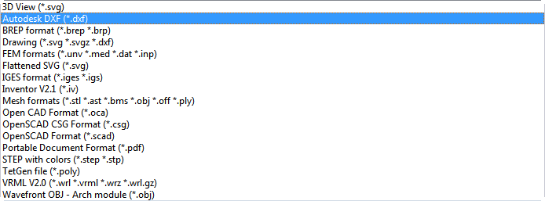

This documentation is not finished. Please help and contribute documentation.
See Draft ShapeString for good documented Command. Gui Command gives an overview over commands. And see List of Commands for other commands.
Go to Help FreeCAD to contribute.
|
| Emplacement du menu |
|---|
| Fichier → Exporter |
| Ateliers |
| Tous |
| Raccourci par défaut |
| Ctrl+E |
| Voir aussi |
| Importer |
Contents |
Permet d'exporter dans différents formats un objet sélectionné dans un document FreeCAD actif. Selon ces modules d'extension sont installés et prennent en charge plusieurs types de fichiers, tels que, par exemple, IGES, STEP, . BREP, STL, OBJ, PLY et d'autres.
Utilisation
- Sélectionnez un objet. Si aucun objet n'est sélectionné un message d'erreur s'affiche.
- Activer la fonction
Ouverture de la boîte de dialogue pour définir les paramètres d'exportation:
{kind=link}
Les formats d'exportation:
{kind=link}
- Indiquer un emplacement, un nom et le format d'exportation.
Remarques
Les fichiers de projets FreeCAD ont l'extension FCStd. Pour plus d'informations sur la structure interne des fichiers de projet FreeCAD lire l'article Format de fichier FCStd. Autres articles sur ce sujet: